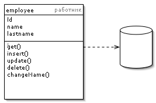

Active Record (Активная запись)

Паттерн проектирования Active Record
Описание Active Record
Один объект управляет и данными, и поведением. Большинство этих данных постоянны и их надо хранить в БД. Этот паттерн использует наиболее очевидный подход - хранение логики доступа к данным в объекте сущности.
Объект является "обёрткой" одной строки из БД или представления, включает в себя доступ к БД и логику обращения с данными.
Пример: объект "Работник" содержит данные об одном работнике и методы: добавить, обновить или удалить. Помимо прочего, отдельным методом вынесена смена имени.
Примеры реализации
// Active Record Pattern in JavaScript
class User {
constructor(id, name, email) {
this.id = id;
this.name = name;
this.email = email;
}
static find(id) {
console.log(`Finding user with id: ${id}`);
// Simulate database query
return new User(id, 'John Doe', 'john@example.com');
}
static findAll() {
console.log('Finding all users');
// Simulate database query
return [
new User(1, 'John Doe', 'john@example.com'),
new User(2, 'Jane Smith', 'jane@example.com')
];
}
save() {
if (this.id) {
console.log(`Updating user: ${this.name}`);
return this.update();
} else {
console.log(`Creating user: ${this.name}`);
return this.create();
}
}
create() {
this.id = Math.floor(Math.random() * 1000);
console.log(`User created with id: ${this.id}`);
return this;
}
update() {
console.log(`User updated: ${this.name}`);
return this;
}
delete() {
console.log(`Deleting user: ${this.name}`);
return true;
}
changeName(newName) {
this.name = newName;
console.log(`Name changed to: ${newName}`);
}
}
// Usage
const user = User.find(1);
user.changeName('John Updated');
user.save();
const newUser = new User(null, 'New User', 'new@example.com');
newUser.save();// Active Record Pattern in C++
#include <iostream>
#include <string>
#include <vector>
class User {
private:
int id;
std::string name;
std::string email;
public:
User(int id, const std::string& name, const std::string& email)
: id(id), name(name), email(email) {}
static User find(int id) {
std::cout << "Finding user with id: " << id << std::endl;
return User(id, "John Doe", "john@example.com");
}
static std::vector<User> findAll() {
std::cout << "Finding all users" << std::endl;
return {
User(1, "John Doe", "john@example.com"),
User(2, "Jane Smith", "jane@example.com")
};
}
void save() {
if (id > 0) {
std::cout << "Updating user: " << name << std::endl;
update();
} else {
std::cout << "Creating user: " << name << std::endl;
create();
}
}
void create() {
id = rand() % 1000;
std::cout << "User created with id: " << id << std::endl;
}
void update() {
std::cout << "User updated: " << name << std::endl;
}
void deleteUser() {
std::cout << "Deleting user: " << name << std::endl;
}
void changeName(const std::string& newName) {
name = newName;
std::cout << "Name changed to: " << newName << std::endl;
}
int getId() const { return id; }
std::string getName() const { return name; }
std::string getEmail() const { return email; }
};// Active Record Pattern in Go
package main
import "fmt"
type User struct {
ID int
Name string
Email string
}
func FindUser(id int) *User {
fmt.Printf("Finding user with id: %d\n", id)
return &User{ID: id, Name: "John Doe", Email: "john@example.com"}
}
func FindAllUsers() []*User {
fmt.Println("Finding all users")
return []*User{
{ID: 1, Name: "John Doe", Email: "john@example.com"},
{ID: 2, Name: "Jane Smith", Email: "jane@example.com"},
}
}
func (u *User) Save() {
if u.ID > 0 {
fmt.Printf("Updating user: %s\n", u.Name)
u.Update()
} else {
fmt.Printf("Creating user: %s\n", u.Name)
u.Create()
}
}
func (u *User) Create() {
u.ID = 100 + len(u.Name) // Simple ID generation
fmt.Printf("User created with id: %d\n", u.ID)
}
func (u *User) Update() {
fmt.Printf("User updated: %s\n", u.Name)
}
func (u *User) Delete() {
fmt.Printf("Deleting user: %s\n", u.Name)
}
func (u *User) ChangeName(newName string) {
u.Name = newName
fmt.Printf("Name changed to: %s\n", newName)
}
// Usage
func main() {
user := FindUser(1)
user.ChangeName("John Updated")
user.Save()
newUser := &User{Name: "New User", Email: "new@example.com"}
newUser.Save()
}# Active Record Pattern in Python
class User:
def __init__(self, user_id=None, name=None, email=None):
self.id = user_id
self.name = name
self.email = email
@classmethod
def find(cls, user_id):
print(f"Finding user with id: {user_id}")
return cls(user_id, "John Doe", "john@example.com")
@classmethod
def find_all(cls):
print("Finding all users")
return [
cls(1, "John Doe", "john@example.com"),
cls(2, "Jane Smith", "jane@example.com")
]
def save(self):
if self.id:
print(f"Updating user: {self.name}")
self.update()
else:
print(f"Creating user: {self.name}")
self.create()
def create(self):
self.id = hash(self.name) % 1000
print(f"User created with id: {self.id}")
def update(self):
print(f"User updated: {self.name}")
def delete(self):
print(f"Deleting user: {self.name}")
def change_name(self, new_name):
self.name = new_name
print(f"Name changed to: {new_name}")
# Usage
if __name__ == "__main__":
user = User.find(1)
user.change_name("John Updated")
user.save()
new_user = User(name="New User", email="new@example.com")
new_user.save()<?php
// Active Record Pattern in PHP
class User {
private $id;
private $name;
private $email;
public function __construct($id = null, $name = null, $email = null) {
$this->id = $id;
$this->name = $name;
$this->email = $email;
}
public static function find($id) {
echo "Finding user with id: $id\n";
return new self($id, "John Doe", "john@example.com");
}
public static function findAll() {
echo "Finding all users\n";
return [
new self(1, "John Doe", "john@example.com"),
new self(2, "Jane Smith", "jane@example.com")
];
}
public function save() {
if ($this->id) {
echo "Updating user: {$this->name}\n";
$this->update();
} else {
echo "Creating user: {$this->name}\n";
$this->create();
}
}
private function create() {
$this->id = rand(1, 1000);
echo "User created with id: {$this->id}\n";
}
private function update() {
echo "User updated: {$this->name}\n";
}
public function delete() {
echo "Deleting user: {$this->name}\n";
}
public function changeName($newName) {
$this->name = $newName;
echo "Name changed to: $newName\n";
}
}
// Usage
$user = User::find(1);
$user->changeName("John Updated");
$user->save();
$newUser = new User(null, "New User", "new@example.com");
$newUser->save();
?>Использована иллюстрация с сайта Мартина Фаулера со страницы о паттерне